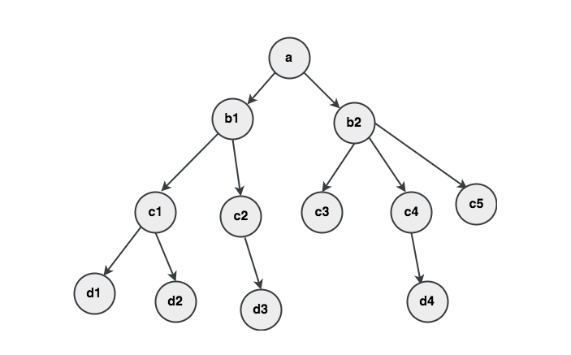
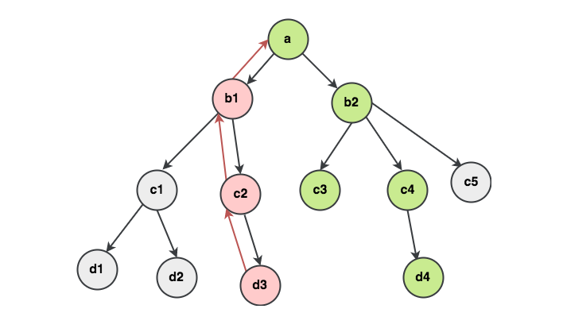
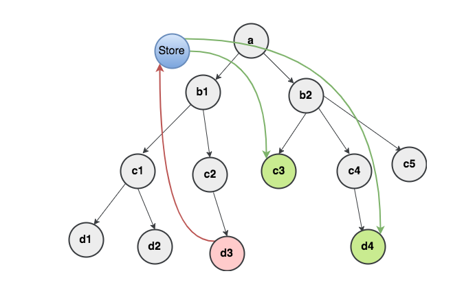

Redux
Redux là một thư viện JS giúp quản lý trạng thái của ứng dụng.
Redux là độc lập với React, nhưng kết hợp hoàn hảo với React.
Tại sao nên sử dụng Redux
Giả sử chúng ta có một ứng dụng single page application gồm nhiều node (component) như hình:

Giả sử có một hành động nào đó được kích hoạt ở node d3
và ta muốn thay đổi trạng thái (state) ở d4 và c3
thì:
- luồng dữ liệu sẽ được truyền từ node
d3trở về nodea - từ node
amới truyền được đến các noded4vàc3

Cập nhật trạng thái (state) cho node d4:
d3-c2-b1-a-b2-c4-d4
Cập nhật trạng thái (state) cho node c3: d3-c2-b1-a-b2-c3
Với những bài toàn nhỏ thì chúng ta hoàn toàn có thể dùng React để cập nhật các trạng thái (state) một cách dễ dàng mà không cần dùng đến Redux.
Nhưng nếu là một bài toàn lớn thì sao lúc này nếu chỉ sử dụng Reac để cập nhật các trạng thái (state) thì thật sự là một khó khăn rất là lớn. Từ những nhược điểm trên thì Redux ra đời nhằm khắc phục nhược điểm đó.

Từ hình vẽ ta thấy để giải quyết bài toán trên ta chỉ cần dispatch một
action từ node d3 về store rồi d4
và c3 chỉ cần connect tới store và cập nhật
data thay đổi thế là bài toán được giải quyết một cách dễ dàng.
Cài đặt
Để cài đặt Redux cho ứng dụng của bạn thì bạn chạy lệnh sau:
npm install redux
Nguyên lý của Redux
Redux được xây dựng dựa trên ba nguyên lý như sau:
- Trạng thái (state) của toàn bộ ứng dụng được lưu trong trong 1 store duy nhất là 1 Object mô hình tree
- Chỉ có 1 cách duy nhất để thay đổi trạng thái (state) đó là tạo ra một action (là 1 object mô tả những gì xảy ra)
- Để chỉ rõ trạng thái (state) tree được thay đổi bởi 1 action bạn phải viết pure reducers
Hình ảnh minh họa nguyên lý hoạt động của Redux:

Cách sử dụng Redux cơ bản
Nếu muốn sử dụng Redux, chúng ta cần nhớ bốn thành phần chính của Redux:
- Store
- Views
- Actions
- Reducers
Chi tiết 4 thành phần được mô tả như sau.
Store: Là nơi quản lý trạng thái (state), có thể truy cập để lấy trạng thái (state) ra, update state hiện có, và listener để nhận biết xem có thay đổi gì không, và cập nhật qua views.
import { createStore } from 'redux';
const store = createStore(myReducer);
console.log('Default:', store);
Đối tượng store có 3 phương thức quan trọn bạn cần chú ý đó là:
getState(): Giúp lấy ra state hiện tạidispatch(action): Thực hiện gọi 1 actionsubscrible(listener): Luôn lắng nghe xem có thay đổi gì ko rồi ngay lập tức cập nhật ra View
Actions: nó là một object JS thuần túy, định nghĩa hai thuộc tính lần lượt là:
type: kiểu của action, ví dụ như ‘TOGGLE_STATUS’payload: giá trị tham số mà action creator truyền lên
var action = {
type: 'TOGGLE_STATUS',
payload: // tham số
};
Reducers: Khác với actions có chức năng là mô tả những thứ gì đã xảy ra, nó không chỉ rõ state nào của response thay đổi, mà việc này là do reducers đảm nhiệm, nó là nơi xác định state sẽ thay đổi như thế nào, sau đó trả ra một state mới.
var myReducer = (state = initialState, action) => {
if (action.type === 'TOGGLE_STATUS') {
let newState = {...state}
newState.status = !state.status;
return newState; // muc dich cua reducer la tra ra cai state moi
}
return state;
}
Views: Hiển thị dữ liệu được cung cấp bởi Store.
Kết hợp Redux với React
Cài đặt redux, react, react-redux.
npx create-react-app test-react-redux cd test-react-redux npm install redux react-redux
npm install classnames npm install react-autobind npm install todomvc-app-css
Gói react-redux chính là view layer binding, làm nhiệm vụ
kết nối cho redux và react.
Chạy chương trình
npm start
Chúng ta có thể tạo ra các thư mục:
- actions
- constants
- reducers
- store
- containers
- components
Middleware
redux-thunk, redux-saga, redux-observable.
redux-thunk
Cài đặt:
create-react-app redux-thunk-demo cd redux-thunk-demo npm install redux react-redux redux-thunk redux-saga redux-observable
x
Tham khảo
Redux For Beginners | React Redux Tutorial - YouTube
Redux cho người mới bắt đầu - Part 2 First Project - Viblo
Redux thật là đơn giản (phần cuối) - Nexus FrontierTech